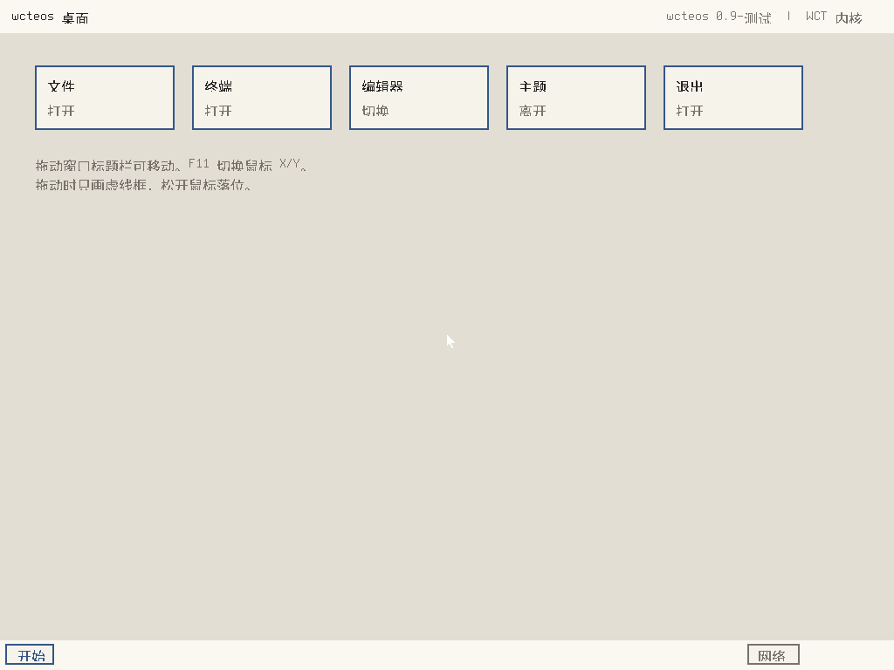
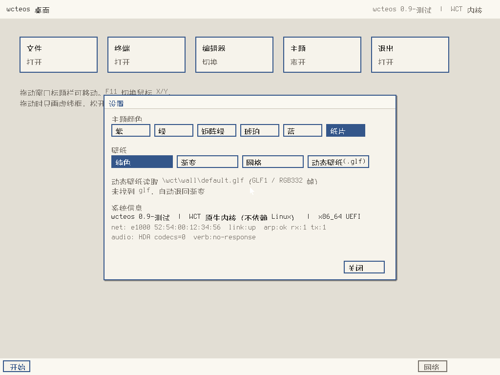
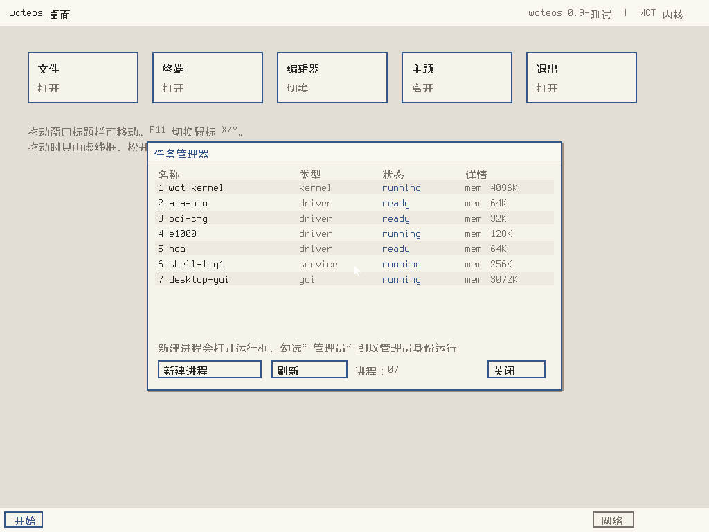
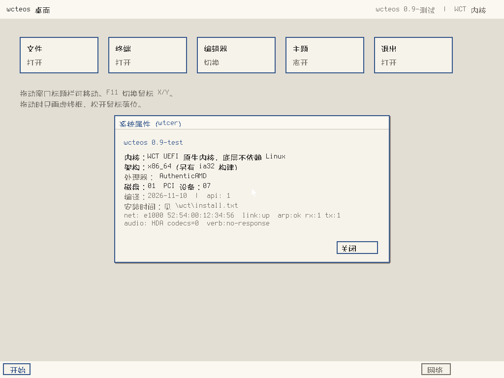

wcteos：自己写内核、自己写引导
不是把 Linux 打包改名，也不是套一层壳。引导、内核、驱动、窗口系统都在这一份代码里，从 UEFI 固件接手之后直接接管屏幕、键盘、鼠标、磁盘和网卡。
默认中文界面，纸片风格窗口，64 位与 32 位 UEFI 各一份引导文件。
这是什么
wcteos 0.9-test 是一个 x86_64 / x86 的 UEFI 系统。开机后固件加载 EFI/BOOT/BOOTX64.EFI（32 位为 BOOTIA32.EFI），它初始化图形输出、内存、磁盘、网卡和音频控制器，然后进入自己的桌面。
内核里没有 Linux 的代码，也没有 systemd、X11 或任何 Linux 运行时。文件系统读写、窗口绘制、进程登记、压缩格式都是自己实现的。
0.9-test 是测试版：功能能跑，但硬件兼容范围有限，重要数据请先备份，不要装在唯一的工作机上。
已经能做的事
原生内核
UEFI 直接跳进自研内核，自己管帧缓冲、中断和内存，不依赖 Linux、不依赖 GRUB。
中文纸片桌面
窗口、菜单、对话框全中文；窗口带纸张投影和标题栏纸边，六套配色可切换。
鼠标键盘
优先用固件提供的鼠标协议，固件没给才自己走 USB HID；F11 可反转鼠标方向。
磁盘与文件
ATA PIO 读写，FAT32 目录遍历；内置 .wcte 压缩，文本与全零数据压缩率约 2.4%。
网卡
Intel e1000 系列 MMIO 驱动，自己建收发环，实测 ARP 请求有应答，收 1 帧发 1 帧。
音频控制器
HDA 控制器复位与寄存器可读（GCAP 正常）；codec 枚举尚未通过，播放通路还没打通。
进程表
内核维护真实进程表：pid、名称、类型、状态、内存、累计 tick；任务管理器直接读这张表。
运行框
Ctrl+Shift 呼出运行框，可选管理员身份；wtr 进命令窗口，wtcer 看系统属性。
下载
| 文件 | 用途 | 大小 |
|---|---|---|
| wcteos-0.9-test.iso | 光盘镜像，含 64 位与 32 位引导；也可直接写到 U 盘 | 约 96 MB |
| wcteos-0.9-test-usb.img | U 盘启动镜像，写入后用 UEFI 启动 | 约 48 MB |
| 源码仓库 | 内核、驱动、桌面、压缩格式全部代码 | git clone |
写 U 盘：Linux 用 dd if=wcteos-0.9-test-usb.img of=/dev/sdX bs=4M，Windows 可用 Rufus 选“DD 模式”。目标盘会被整盘覆盖，别选错盘。
界面截图




自己编译
只依赖 mingw-w64 交叉编译器，不需要 Linux 头文件。
# 64 位 x86_64-w64-mingw32-gcc -ffreestanding -fno-stack-protector -fno-builtin \ -mno-red-zone -O2 -I. -c kernel.c -o nk.o x86_64-w64-mingw32-gcc -nostdlib -Wl,--subsystem,10 -Wl,-e,efi_main \ -Wl,--image-base=0x10000000 -Wl,--enable-reloc-section -Wl,--gc-sections \ -o BOOTX64.EFI nk.o -lgcc # 32 位（链接入口是 _efi_main） i686-w64-mingw32-gcc -ffreestanding -fno-stack-protector -fno-builtin -O2 -I. -c kernel.c -o nk32.o i686-w64-mingw32-gcc -nostdlib -Wl,--subsystem,10 -Wl,-e,_efi_main \ -Wl,--image-base=0x10000000 -Wl,--enable-reloc-section -Wl,--gc-sections \ -o BOOTIA32.EFI nk32.o -lgcc
把生成的文件放进 FAT32 分区的 EFI/BOOT/，UEFI 固件就会加载它。仓库里 scripts/make_esp.sh 与 scripts/build_iso.sh 是一键做法。
.wcte 压缩格式
gcc -O2 -o wctetool wcte.c wctetool.c ./wctetool c input.bin output.wcte # 压缩 ./wctetool d output.wcte input.bin # 解压 ./wctetool t output.wcte # 校验
.wct / .wet / .dwc
.wct 是可执行程序后缀，.wet 是脚本，.dwc 放共享依赖。双击文件或在运行框里输入文件名即可加载，内容由内核从 FAT32 读入执行。
代码与版本
仓库：github.com/ETQWFD/wct-kernel
当前版本 0.9-test。变更记录、编译说明和内核自检步骤在仓库 doc/ 目录。